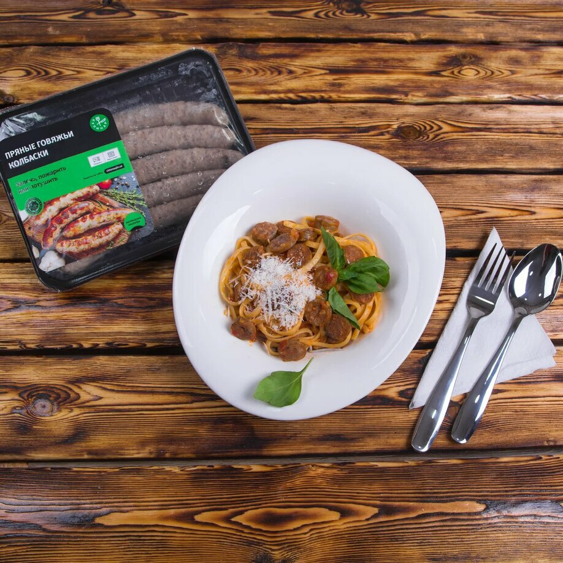

|  |
Spagetti
- Dastlab kolbaskalarni muzdan tushiring.
-
Buni mikrotoʼlqinli pechda amalga oshirish mumkin, ammo biz
kolbasa ustiga qaynoq suv quyib, 4-6 daqiqa ushlab turishni
tavsiya yetamiz.
- Piyozni arting va kubik shaklida toʼgʼrang.
- Pomidorlarni ham kub shaklida toʼgʼrab oling.
- Kolbaskalarni ingichka dumaloq boʼlaklarga boʼling.
- Zaytunni 2-3 qismga kesib oling.
-
Sarimsoqni mayda qirgʼichdan yoki sarimsoq pressidan oʼtkazing.
-
Piyozni yumshoq va shaffof boʼlgunga qadar oʼrtacha olovda
qovuring.
-
Keyin pomidor qoʼshing va past olovda yana 2-3 daqiqa qovuring.
- Kolbaskalarni qoʼshing va yana 5 daqiqa pishiring.
- Tugʼralgan sarimsoq va zaytun qoʼshing.
- Tuz va murch hamda oregano qoʼshing.
- Yana 1-2 daqiqa davomida qovuring.
-
Agar sousning suyuqroq boʼlishini istasangiz, yarim stakan qaynoq
suv yoki qaynab turgan bulondan qoʼshib yuboring.
-
Aralashtiring, ustini qiya yopib, past olovda qaynatishga qoʼying.
- Yendi spagettini pishirish qoldi.
- Idishga 2 litr suv soling va qaynatib oling.
- Tuzlab, 1 osh qoshiq oʼsimlik yogʼi qoʼshing.
-
Spagettini solib, oʼramidagi koʼrsatmalariga muvofiq pishiring.
- Yopishib qolmasligi uchun aralashtirib turishni unutmang.
|